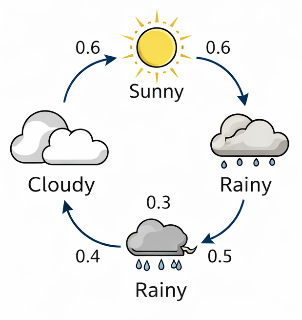
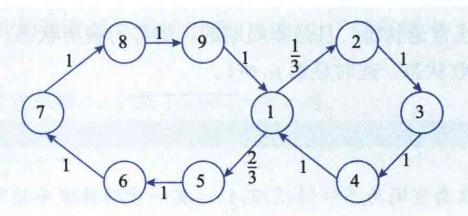
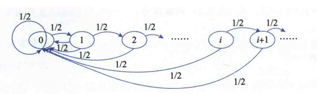
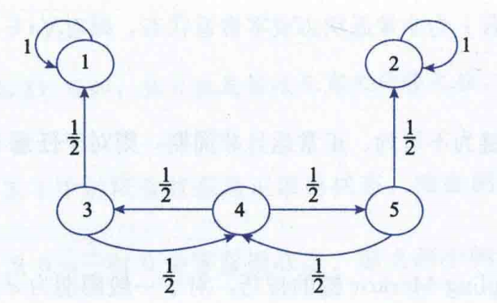
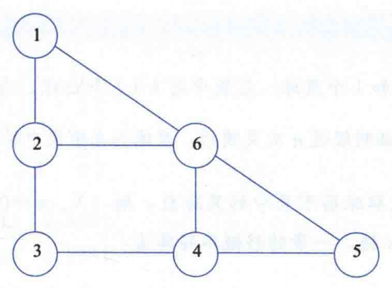

从无后效性到状态转移的数学之美
一个用户正在购物网站里浏览页面。下一步会去“网站首页”“商品页”还是“购物车”，通常主要取决于当前所在页面，而不是更早之前点过哪些页面。
图像 1：网页之间的点击跳转可抽象为状态转移
讨论“明天是什么天气”时，我们往往先看今天是晴、雨还是多云。也就是说，未来天气的判断重点落在当前状态上，这正好符合 Markov 链的直观思想。

图像 2：天气状态之间的转移可以用转移矩阵描述
Markov 链的定义 (无后效性)
如果一个随机过程 \(\{X_n, n \ge 0\}\) 满足无后效性（马尔可夫性），即：已知系统现在所处的状态，系统未来的状态只与现在有关，而与过去的演变历史无关，则称该过程为 Markov 链。
“未来只取决于现在，而与过去无关。”
设某地每天的天气只考虑三种状态：\( S=\{\text{晴天},\ \text{雨天},\ \text{多云}\} \)
记 \( X_n=\text{第 }n\text{ 天的天气状态} \). 若明天的天气只与今天有关，而与更早以前的天气无关， 则 \(\{X_n\}\) 可以看作一个 Markov 链。
它表示：今天处于状态 \(i\)，明天转移到状态 \(j\) 的概率。例如
\( p_{\text{晴},\text{雨}} \): 表示“今天是晴天，明天变成雨天”的概率。
\( p_{\text{多云},\text{晴}} \): 表示“今天多云，明天转晴”的概率。
一步转移概率矩阵 \(P\)（每一行概率和为 1）:
按状态顺序 \((\text{晴天},\ \text{雨天},\ \text{多云})\) 排列。
第一行 \( (0.6,\ 0.3,\ 0.1) \) 表示：如果今天是晴天，那么明天
同理，第二行和第三行分别对应“今天是雨天”和“今天是多云”的情形。
因为对固定的“今天状态”来说，明天只能是： \( \text{晴天},\ \text{雨天},\ \text{多云} \)
三者必居其一，所以每一行概率和必须等于 1。
由所有一步转移概率构成的矩阵 \(\boldsymbol{P} = (p_{ij})\) 具有极其重要的性质（随机矩阵）：
即：矩阵中所有元素非负，且每一行的元素之和必然等于 1。
系统的状态是 \(0 \sim n\)，反映赌博者在赌博期间拥有的金钱数额。当他输光（状态 \(0\)）或拥有的钱数为 \(n\) 时，赌博停止（吸收壁），否则他将持续赌博。
每次以概率 \(p\) 赢得 1 ，以概率 \(q=1-p\) 输掉 1。
注：第 1 行和最后 1 行代表一旦到达状态 0 或 n，就永远停留在该状态（对角线元素为 1）。
设有一只蚂蚁在一个无向图的节点上爬行。当两个节点相邻时，蚂蚁将爬向它邻近的一点，并且爬向任何一个邻近节点的概率是相同的。
某商店每天早上检查商品剩余量 \(x\)，订购策略为：
设需求量 \(Y_n\) 独立同分布且 \(P(Y_n=j) = a_j\)。令 \(X_n\) 为第 \(n\) 天结束时的存货量：
由于明天的库存 \(X_{n+1}\) 完全由今天的库存 \(X_n\) 和明天的新增需求 \(Y_{n+1}\) 决定，因此 \(\{X_n, n \ge 1\}\) 是一个 Markov 链。
根据 \(Y_n\) 的分布推导其转移概率 \(p_{ij}\) 为：
如果今天是晴天，那么 后天是雨天的概率 又该怎么算？
这就不是一步转移，而是要考虑 两步转移概率。
例如，从“晴天”到“雨天”经过两步，可能有多种路径：
所以两步转移概率，本质上就是把所有可能的“中间状态路径”概率加总起来。
称条件概率
为 Markov 链的 \(n\) 步转移概率，相应地称 \[ \boldsymbol{P}^{(n)}=\left(p_{ij}^{(n)}\right) \] 为 \(n\) 步转移概率矩阵。
当 \(n=1\) 时，
此外规定
\(n\) 步转移概率 \(p_{ij}^{(n)}\) 指的是： 系统从状态 \(i\) 出发，经过 \(n\) 步后到达状态 \(j\) 的概率。
它只关心“起点”和“终点”， 对中间 \(n-1\) 步经过哪些状态并没有要求。
对一切 \(m,n\ge 0,\ i,j\in S\)，有：
下面证明 \[ p_{ij}^{(m+n)}=\sum_{k\in S}p_{ik}^{(m)}p_{kj}^{(n)}. \]
在上式中乘上一个“1”：
于是可得
由 Markov 性，
同时，
因而
甲、乙两人进行某种比赛。设每局比赛中：
每局比赛后，胜者记 “\( +1 \)” 分，负者记 “\(-1\)” 分，和局不记分。 当两人中有一人获得 \(2\) 分时，比赛结束。
记 \(X_n\) 为比赛进行到第 \(n\) 局时甲获得的分数，则 \( \{X_n,n=0,1,2,\cdots\} \) 构成一个时齐 Markov 链。
其中 \(-2\) 与 \(2\) 为吸收态，一旦到达，比赛立即结束。
求：在甲已经获得 \(1\) 分的情况下， 不超过两局 可结束比赛的概率。
按状态顺序 \((-2,-1,0,1,2)\) 排列：
两步转移概率矩阵为
甲当前已得 \(1\) 分，对应状态 \(1\)。 在状态顺序 \((-2,-1,0,1,2)\) 下， 第 \(4\) 行就是从状态 \(1\) 出发的两步转移概率。
比赛结束对应到达吸收态 \(-2\) 或 \(2\)。 由于从状态 \(1\) 出发，两步之内不可能到 \(-2\)， 所以只需考虑到达状态 \(2\) 的概率。
从状态 \(1\) 出发，不超过两局结束比赛的概率为
其中：
所以总概率为 \[ p+rp=p+pr. \]
设赌徒破产例子中，总金额 \(n=3\)，胜负概率均等 \(p=q=\frac{1}{2}\)。赌博者从 2 元开始，求他经过 4 次赌博后输光（状态变为 0）的概率。
目标概率为：
故 \(p_{20}^{(4)}=\frac{5}{16}\)（\(\boldsymbol{P}^{(4)}\) 中第3行第1列）。
A, B, C, D 四种啤酒每两个月的转换矩阵 \(\boldsymbol{P}\) 为：
目前顾客的初始市场分布（向量）为：
我们需要求 \(\boldsymbol{P}^3\) 并计算最终的市场占有率：
啤酒 A 的最终占有率 \(v\)（第一列乘积）：
A 的市场份额由 25% 增至 62.4%，广告极其有效！
剖析 Markov 链的内在骨架：可达、常返与周期
在 Markov 链中，虽然所有状态都属于同一个系统，但它们在长期演化中的作用并不相同。
对状态进行分类，本质上是为了研究系统的 长期行为， 也就是：
核心想法
转移矩阵告诉我们“一步怎么走”，而状态分类帮助我们理解“长期会走向哪里”。两者配合，才能真正看懂一个 Markov 链。为了刻画状态的长期性质，我们通常要研究下面几个问题：
一个状态能否经过若干步到达另一个状态？ 两个状态之间是否可以彼此到达？
离开一个状态后，将来是否还会回到它？ 是几乎必然返回，还是可能一去不返？
返回某个状态是否只能发生在某些固定步数上？ 如果是，就说明该状态具有周期。
例如吸收态、闭类等，它们往往决定系统最终可能停留的区域。
直白理解：
可达意味着有路可走；互通意味着这两地之间可以互相串门，是双向连通的。由于互通是一种等价关系，我们可以把所有相互连通的状态归为一个“类” (Class)。
若整个 Markov 链只存在一个类（即所有状态彼此互通），就称它是不可约的 (Irreducible)；否则称为可约的。
因为整个状态空间并没有形成一个统一的互通类。状态被分裂成多个等价类，某些类之间只有单向可达关系。
本例中至少有 \(C_1,C_2,C_3\) 三个类，因此该链是可约的。
互通 (\(\leftrightarrow\)) 是一种等价关系，满足以下三个核心性质：
(系统停留在原地的概率 \(p_{ii}^{(0)}=1>0\))
(由互通的定义直接得出双向可达)
(通过中间状态建立新的连接，下一页详细证明)
证明目标：已知 \(i \leftrightarrow j\) 且 \(j \leftrightarrow k\)，求证 \(i \leftrightarrow k\)。我们主要证明 \(i \rightarrow k\)：
因为 \(i \rightarrow j\) 且 \(j \rightarrow k\)，必然存在步数 \(m, n \ge 0\)，使得：
物理意义：这说明从状态 \(i\) 出发，有一条长度为 \(m\) 的路径能以正概率到达 \(j\)；同时从 \(j\) 出发，有一条长度为 \(n\) 的路径能以正概率到达 \(k\)。
从 \(i\) 到 \(k\) 走 \(m+n\) 步的总概率，至少包含了“特定经过 \(j\) 的那条路”的概率：
结论：这说明从 \(i\) 一定能经过 \(m+n\) 步到达 \(k\)，即 \(i \rightarrow k\)。同理可证反向 \(k \rightarrow i\)，故 \(i \leftrightarrow k\)，传递性成立！
若集合 \(\{n : n \ge 1, p_{ii}^{(n)} > 0\}\) 非空，则称它的最大公约数 \(d = d(i)\) 为状态 \(i\) 的周期。
通俗理解：
系统从某个状态出发，想要回到这个状态，不是什么时候都行，而只能在某些固定步数上回来。 就像你每周一去打球（周期为7），虽然你不可能在第3天去，但你的周期就是7的倍数约束。
假设从状态 1 出发，再回到状态 1 的可能步长集合为：
它的最大公约数是 2。虽然从状态 1 经 2 步并不能回来，但我们仍然称 2 是状态 1 的周期！
若状态 \(i\) ， \(j\) 同属一类，则 \(d(i)=d(j)\)
以 \(f_{ij}^{(n)}\) 记从 \(i\) 出发，经 \(n\) 步后首次到达 \(j\) 的概率：
令 \(f_{ij} = \sum_{n=1}^{\infty} f_{ij}^{(n)}\)，它代表从 \(i\) 出发，在有限步内迟早能到达 \(j\) 的总概率。
从 \(j\) 出发，必定以概率 1 重新返回 \(j\)。
（“落叶归根，不管出去多久，最终一定会回来”）
过程以概率 \(1 - f_{jj} > 0\) 永远不再回到 \(j\)。
（“断线的风筝，一去不复返，从状态 j 永远滑过了”）
对于常返状态 \(i\)，虽然它一定能回来，但需要等多久呢？我们定义平均返回步数（时间） \(\mu_i\)：
不仅一定能回来，而且平均等待时间有限。
（这是大多数稳定系统的特征）
虽然概率上一定能回来，但平均要等无限久。
（通常只出现在无限状态空间中）
如果一个状态既是正常返的，又是非周期的，那么它被称为遍历状态。
遍历 = 正常返 + 非周期
\((f_{jj}=1,\mu_j\lt +\infty,d=1)\)
遍历性是马尔可夫链最重要的性质之一。如果一个不可约链的所有状态都是遍历的，系统最终会达到一个稳定的平衡状态（平稳分布），与初始状态完全无关！
这是遍历状态的一种极端特例。如果系统进入某个状态后，永远停留在该状态（无法离开）：
此时显然平均返回时间 \(\mu_i = 1\)
直观解释：\(\sum p_{ii}^{(n)}\) 代表回到状态 \(i\) 的期望次数。如果是常返的，由于它会无限次被访问，这个期望次数必然是无穷大。
转移概率与“首达概率”的内禀关系：
将 \(n\) 步到达 \(j\) 的路径，按照“第一次到达 \(j\) 发生在第 \(l\) 步”进行穷举拆分，利用全概率公式证明了判定定理。
注：同属一个类的状态，它们同为常返或非常返，同为正常返或零常返（类性质）。
这就证明了：状态 \(i\) 为暂留态当且仅当 \(f_{ii}\lt 1\)，为常返态当且仅当 \(f_{ii}=1\)。
由于 \(i \leftrightarrow j\)，说明 \(i\) 与 \(j\) 互通，即：
如果 \(i\) 是常返的，那么系统只要进入了与 \(i\) 同一个互通类，就终究还会回到 \(i\)。 因而从 \(j\) 出发，返回到 \(i\) 的概率必为 1，即
也就是说，在同一个互通类中：
另外，当 \(i,j\) 同为常返状态时，它们还具有一致的返回时间性质：
因此，一个互通类中的状态在“是否常返”“是否正常返”这些长期性质上是统一的。 这就是为什么我们研究状态分类时，常常不是孤立地看某一个状态， 而是把它放到整个互通类中一起考察。
设 Markov 链的状态空间为 \(S=\{1,2,3,4\}\)，转移矩阵为：
解析非常返状态：
解析常返状态与遍历性：
结论：状态 1 和 2 都是常返的。
计算平均返回时间：
状态 1 和 2 均是正常返，且无周期，故它们都是遍历状态！
状态空间 \(S=\{0,1,2,\dots\}\)，转移概率：
\(p_{00} = 1/2\), \(p_{i,i+1} = 1/2\), \(p_{i0} = 1/2\)。
分析状态 0：
首达概率 \(f_{00}^{(n)} = 1/2^n\)（即连续向右走 n-1 步后，第 n 步重置回 0）。
故状态 0 是正常返且非周期的（即遍历状态）。
又因为任意 \(i \leftrightarrow 0\)，根据类性质，所有状态 \(i > 0\) 都是遍历的！

图 5-4：在自然数集上的状态转移过程
探究随机系统经过长期演化后的稳定规律
对于一个随机系统，只研究“下一步会怎样”往往是不够的。对于 n 步转移概率 \(p_{ij}^{(n)} = P(X_n=j \mid X_0=i)\)，我们主要讨论两个问题：
系统长期处于各状态的概率是否会稳定下来？
如果极限存在，它是否依赖于起点 \(i\)？
直观思考：
经过很长时间后，系统还会不会“记得”自己最初是从哪里出发的？
极限定理研究的是 Markov 链经过大量转移后，\(p_{ij}^{(n)}\) 的变化趋势。它是分析系统长期稳定性的重要工具。
设系统只有两个状态，每次在这两者间转移，转移矩阵为：
思考：
现在考虑 \(\boldsymbol{P}^{(n)}=\boldsymbol{P}^n\) 在 \(n \to \infty\) 时的情况。经过很多步以后，系统的转移概率会不会趋于某个稳定值？
通过特征值分解 \(\boldsymbol{P} = \boldsymbol{Q} \boldsymbol{D} \boldsymbol{Q}^{-1}\)，我们可以得到：
由于 \(0 < p, q < 1\)，故 \(|1-p-q| < 1\)。当 \(n \to \infty\) 时，\((1-p-q)^n \to 0\)。
核心结论：
极限矩阵的两行完全相同！这意味着不论链从哪个状态出发，最终到达各状态的概率都趋于相同的稳定分布，与初始状态无关。
回顾一维对称随机游动（状态在整数轴上左右等概率移动）：
启发与对比：
在例 5.3.1 中，所有状态是正常返状态，长期极限概率是一个正常数。 在例 5.3.2 中，无论是零常返还是非常返，长期返回概率的极限都趋于 0。 这暗示着：状态的长期极限行为，与其平均回转时间 \(\mu_i\) 息息相关！若状态 \(i\) 是周期为 \(d\) 的常返状态，则：
(其中 \(\mu_i\) 为状态 \(i\) 的平均回转时间。当 \(\mu_i = \infty\) 时，规定右侧等于 0)
一句话直观理解：
这个定理将“长期返回概率的极限”与“平均回转时间”挂钩。
平均回来得越快 (\(\mu_i\) 小)，长期来看你在这个状态上待的时间比例就越高，发现它的概率就越大。
平均回来得越慢 (\(\mu_i\) 趋于 \(\infty\))，即使你一定会回来，但在漫长的历史长河中，你在这个点上出现的概率也会被稀释，最终趋于 0。
设 \(i\) 为常返状态，则：
对于常返状态来说，如果平均回转时间无穷大，那么它的“长期出现概率极限趋于 0”，这正是区分零常返与正常返的核心特征。
刚刚我们研究了回到自身的概率 \(p_{ii}^{(n)}\)。那么对于从 \(i\) 到另一个状态 \(j\) 的长期转移概率 \(p_{ij}^{(n)}\) 会如何表现？它是否也收敛？是否会摆脱初始状态 \(i\) 的阴影？
根据目标状态 \(j\) 的性质，跨状态极限被严格分为两类：
若 \(j\) 为非常返状态或零常返状态，则对任意出发点 \(i \in S\)，都有：
如果 Markov 链是不可约、正常返且非周期的（即遍历的），则对任意 \(i, j \in S\)，都有：
重要洞察：
对于“良好”的遍历链，长期转移概率的极限不仅存在，而且只与终点状态 \(j\) 有关，完全遗忘了出发状态 \(i\)！对于状态空间为有限个的 Markov 链：
(附：推论 5.3.3 指出，如果一个链中含有一个零常返状态，则它必包含无限个零常返状态。因此有限状态链中绝对不会出现零常返)。

状态 1 和 2 是典型的吸收态（对角线为1）。状态 3,4,5 互相转移，但有概率漏向 1 或 2。
极限矩阵的右侧三列全为 0，完美印证了“非常返状态长期转移概率趋于 0”的定理。
对于 Markov 链，若某概率分布 \(\{p_j, j \in S\}\) 满足：
其矩阵向量形式可简写为：
其中 \(\boldsymbol{\pi} = (\pi_1, \pi_2, \dots)\) 必须是合法的概率向量，即所有分量非负，且总和为 1 (\(\sum \pi_i = 1\))。此时称 \(\boldsymbol{\pi}\) 为该链的平稳分布。
平稳分布并不是说系统的状态不再发生改变了，而是指整体的分布比例不变。
就像一个流动的水池：进水和出水速率处处抵消，虽然水分子在不断流动，但各个区域的整体水位保持恒定。
数学推导的直觉
若 Markov 链的初始分布 \( P\{X_0=j\}=p_j,\qquad j\in S \) 恰好就是一个平稳分布，则下一时刻 \(X_1\) 的分布为
这说明： \(X_1\) 的分布与 \(X_0\) 的分布完全相同。
依次递推可得，对一切 \(n=0,1,2,\cdots\)，随机变量 \(X_n\) 都有相同的分布。
如果 Markov 链所有状态相通（不可约），且均为周期为 1 的正常返状态，则称该链为遍历的 (Ergodic)。
对于遍历的 Markov 链，若极限
存在且只与目标状态 \(j\) 有关，则称 \(\{\pi_j\}\) 为该链的极限分布。由前文可知 \(\pi_j = 1/\mu_j\)。
对于不可约、非周期的 Markov 链：
终极洞察：极限分布 = 平稳分布
“极限分布”是系统经过长期演化后自然呈现的归宿；“平稳分布”是利用线性代数方程解出来的一步不变点。
定理表明，对于良好的系统，长期跑出来的稳定分布，恰好就是那个利用矩阵方程 \(\boldsymbol{\pi} \boldsymbol{P} = \boldsymbol{\pi}\) 求解出的唯一不变向量！
设平稳分布为 \(\boldsymbol{\pi}=(\pi_1,\pi_2,\pi_3)\)。
解得：\(\boldsymbol{\pi} = (1/3, 1/3, 1/3)\)。
结论：长期以后，链处于状态 1、2、3 的概率都相同，即极限分布为离散均匀分布。
汽车每天从一个车站驶向相邻车站，凌晨等概率开往任一相邻点。记 \(X_n\) 为第 \(n\) 天留宿的车站。

求解 \(\boldsymbol{\pi} \boldsymbol{P} = \boldsymbol{\pi}\) 结合 \(\sum \pi_i = 1\)，得到：
甲袋：k 个白球，1 个黑球。
乙袋：k+1 个白球。
每次各取一球交换。
设 \(X_n\) 为甲袋黑球数，状态空间 \(S=\{0, 1\}\)。转移矩阵：
解方程组 \(\boldsymbol{\pi} = \boldsymbol{\pi} \boldsymbol{P}\)：
\(\textbf{结论：}\) 经过足够多次交换后，黑球仍在甲袋中的概率趋于 1/2。
直觉： 两个袋子总球数相同，长期来看黑球流落到两边的机会完全对称。
我国某种商品在国外销售情况共有连续 24 个季度的状态 (1-畅销, 2-滞销)：
1,1,2,1,2,2,1,1,1,2,1,2,1,1,2,2,1,1,2,1,2,1,1,1
如果该商品的销售情况近似满足时齐性与 Markov 性：
（1）试确定销售状态的一步转移概率矩阵。
（2）如果现在是畅销，试预测之后的第四个季度的销售状况。
（3）如果影响销售的所有因素不变，试预测长期的销售状况。
基于频数进行频率估计：
计算 \(\boldsymbol{P}^4\)：
若现在是畅销 (状态1)，第4个季度仍畅销的概率为 \(p_{11}^{(4)} = 0.611\)。
解方程组 \(\boldsymbol{\pi} \boldsymbol{P} = \boldsymbol{\pi}\)：
结论： 长期来看，该商品将以 14/23 (约 60.9%) 的概率处于畅销状态。
连续时间下的状态跳变规律
学习指引：
先了解这节课的总体路线，建立宏观框架，避免陷入后续复杂的微分公式推导中。直观感受：
离散时间像“每分钟检查一次系统状态”；连续时间像“系统随时随地都可能发生变化”。共同特征：
这些过程都不是“整点才变化”，而是任意时刻都可能发生突变。连续时间 Markov 链不是“每隔一格跳一次”，而是： 先在某个状态停留一段随机时间， 然后突然跳到另一个状态。所以它的样子像一段段“平台 + 跳跃”。
在状态 \(i\) 待多久？由指数分布控制。状态越“不稳定”，离开得越快。
离开后跳到哪个状态？由各个方向的转移速率决定。
现在在哪里？例如 \(X(t)=i\)。连续时间链的“无后效性”说，未来只需要看这个状态。
在状态 \(i\) 待多久？若离开总速率为 \(q_i\)，则等待时间服从参数 \(q_i\) 的指数分布。
离开后去哪里？跳到 \(j\) 的概率是 \(q_{ij}/q_i\)。速率越大，越容易跳过去。
一句话：连续时间链 = “指数闹钟响一下” + “按速率抽签跳一次”。总算有点像人话了。
设 \(\{X(t), t \ge 0\}\) 的状态空间 \(S\) 为离散空间，设 \(S=\{0,1,2,\dots\}\) 或其子集。若对任意 \(s, t \ge 0\) 及 \(i, j \in S\)，有：
则称 \(\{X(t), t \ge 0\}\) 是一个连续时间 Markov 链。
指的是 \(0 \le u < s\) 上整个路径信息。
指的是时刻 \(s\) 的状态 \(X(s)\)。
指的是时刻 \(s+t\) 的状态。
总结句：
未来只和现在有关，不和过去路径有关。记转移概率为：
物理意义： 表示过程在时刻 \(s\) 处于状态 \(i\)，经过时间 \(t\) 后转移到状态 \(j\) 的概率。
相应转移概率矩阵记为： \(\boldsymbol{P}(s,t) = \bigl(p_{ij}(s,t)\bigr)\)
提示：
和离散时间里的 \(p_{ij}^{(n)}\) 类似，只不过这里不是“走 \(n\) 步”，而是“过 \(t\) 时间”。若 \(p_{ij}(s, t)\) 与起点时间 \(s\) 无关，则称该连续时间 Markov 链是时齐的 (Time-homogeneous)。
此时简记为：
并记：
说明：
从现在开始经过 \(t\) 时间后的转移规律，只取决于“时间长度 \(t\)”，与“现在是几点”无关。对于连续时间 Markov 链，除了要考虑“某时刻处于什么状态”，还要关心：
核心本质：
不仅看“去哪”，还看“什么时候去”。已经在状态 \(i\) 待了 \(s\) 时间，并不会让“接下来还要等多久”的规律改变。 就像系统非常冷漠：你等了多久，它并不心疼你。
指引：
连续时间 Markov 性要求“未来只看现在”，所以停留时间必须没有记忆；连续型分布里满足这一点的就是指数分布。设 \(\{X(t), t \ge 0\}\) 是连续时间 Markov 链，假定在时刻 \(0\) 过程刚刚到达状态 \(i\)。
记 \(\tau_i\) 为离开状态 \(i\) 之前停留在状态 \(i\) 的时间，则：
只需证明对任意 \(s, t \ge 0\)，有：
含义：到 \(s\) 时刻为止还没离开状态 \(i\)。
中间那一步用到了 Markov 性：到了时刻 \(s\) 后，只看 \(X(s)=i\)，不看之前怎么待着的。
核心跳跃：
中间那一步用到了 Markov 性：到了时刻 \(s\) 后，只看 \(X(s)=i\)，不看之前怎么待着的。由上面的定理，得到连续时间 Markov 链的一种“重构方式”：
在状态 \(i\) 的停留时间服从参数为 \(\mu_i\) 的指数分布。
离开状态 \(i\) 时，以概率 \(p_{ij}\) 到达 \(j\)，且满足：
平均停留时间为 0，即过程不停留，直接滑过。
平均停留时间为无限长，即一旦进入就再也出不来。
假定我们所考虑的连续时间 Markov 链中不存在瞬过状态，即对任意 \(i\)：
若一个连续时间 Markov 链以概率 1 在任意有限长的时间内转移次数有限，则称其为正则的 (Regular)。 (有限时间内不会发生无限多次跳转，也就是不会出现“短时间里疯狂跳到没完”的离谱情况。)
状态不会下降，增加多少由 Poisson 分布控制。
若 \(X(0)=1\)，则状态空间为 \(\{1,2,3,\dots\}\)。
记 \(T_i\) 为群体数从 \(i\) 增加到 \(i+1\) 所需时间。
当群体数为 \(i\) 时，这 \(i\) 个个体都独立繁殖。
由 Poisson 过程的可加性，总繁殖过程相当于一个强度为 \(\lambda i\) 的 Poisson 过程。
一般地，归纳可得：
由 \(\{T_1 + \cdots + T_j \le t\} \Longleftrightarrow \{X(t) \ge j+1 \mid X(0)=1\}\)，可得：
这是一个几何分布，均值为 \(\mathrm{e}^{\lambda t}\)
若从 \(i\) 个个体开始，则：
相当于 \(i\) 个独立后代过程之和。因此：
提示：
和 Poisson 过程不同，这里增长速度会随着当前个体数增大而加快。记 \(T_i\) 为从 \(i\) 到达 \(i+1\) 或 \(i-1\) 的时间。
这是连续时间链中最经典的一类模型。
\(T_i\) 相互独立，且与下一次转移方向独立，并服从参数为 \(i\mu + i\lambda\) 的指数分布。
记 \(X(t)\) 为 \(t\) 时刻系统中的总人数，则 \(\{X(t), t \ge 0\}\) 是一个生灭过程。
记系统中有 \(n\) 个顾客时的离去率为 \(\mu_n\)，则：
离散时间时齐 Markov 链中，若已知一步转移矩阵 \(\boldsymbol{P}\)，则：
但对于连续时间 Markov 链，转移概率 \(p_{ij}(t)\) 一般不能直接这样求出。
连续时间时齐 Markov 链的转移概率 \(p_{ij}(t)\) 满足：
对有限状态时齐连续时间 Markov 链，有：
称 \(q_{ij}\) 为从状态 \(i\) 转移到状态 \(j\) 的转移速率。很短时间内，\(p_{ij}(t) \approx q_{ij}t\)，所以 \(q_{ij}\) 可以理解为“瞬时跳转快慢”。
单位时间内“朝 \(j\) 跳”的强度。它可以大于 1，不是概率。
状态 \(i\) 往所有其他状态“逃跑”的总强度。
离开越快，平均停留越短。
真正“跳到 \(j\)”的概率，要看 \(j\) 的速率占总速率的比例。
记 \(\boldsymbol{Q}\) 称为连续时间 Markov 链的 Q-矩阵：
若 \(q_{ii} = \sum_{j \ne i} q_{ij} < +\infty\)，则称该矩阵为保守的。
结构解析：
非对角元表示“跳到哪儿的速率”，对角元写成负的是为了让每行和为 0。对一切 \(i, j \in S, t \ge 0\)，当 \(\sum_{j \ne i} q_{ij} = q_{ii} < +\infty\) 时，有：
(在适当正则条件下)
\(p_{ij}(t)\) 的变化，来自两件事：
从状态 \(0\) 出发，\(p_{00}(t)\) 表示 \(t\) 时刻仍在状态 \(0\) 的概率。 由于只有两个状态，所以 \(p_{01}(t)=1-p_{00}(t)\)。
初始条件：\(p_{00}(0)=1\)，因为刚开始就在状态 \(0\)。
长期来看，指数项消失，正常概率趋于 \(\mu/(\lambda+\mu)\)。
设连续时间齐次 Markov 链 \(\{X(t), t\ge 0\}\) 的状态空间为 \( E=\{0,1\}, \) 并且当 \(h\to 0\) 时，
这表示：系统在状态 \(0\) 的停留时间服从参数为 \(\lambda\) 的指数分布， 在状态 \(1\) 的停留时间服从参数为 \(\mu\) 的指数分布。
因而其生成矩阵（转移率矩阵）为
因此 Kolmogorov 向前、向后微分方程分别为
向前微分方程对应的矩阵元素可写成
由 \( P_{01}(t)=1-P_{00}(t) \) 代入第一个方程，得
令 \[ Q_{00}(t)=e^{(\lambda+\mu)t}P_{00}(t), \] 则
由 \( Q_{00}'(t)=\mu e^{(\lambda+\mu)t} \) 可得其通解
利用初始条件 \(P_{00}(0)=1\)，得 \[ C=\frac{\lambda}{\lambda+\mu}. \] 因而
进一步可得完整的转移概率矩阵：
当 \(t\to\infty\) 时， \( e^{-(\lambda+\mu)t}\to 0, \) 因而该两状态链趋于极限分布 \( \left(\frac{\mu}{\lambda+\mu},\ \frac{\lambda}{\lambda+\mu}\right). \)
因此：
特别地：
当 \(j=i\) 时，
当 \(j=i+1\) 时，
当 \(j=i+2\) 时，
由初始条件 \(p_{ii}(0) = 1\)，逐项解上述常微分方程组可得：
这个结果和定义完全一致，说明两种描述方式是等价的。
由于 \(X(0)=1\)，根据模型假定有：
方程解读：
流入 \(j\) 的来源是 \(j-1\)，流出 \(j\) 的速率是 \(j\lambda\)。解微分方程组，即可得：
和前面例 5.5.2 中得到的结论一致。
初始条件：\(p_{ii}(0)=1,\qquad p_{ij}(0)=0\ (j\ne i)\)
讲解提示（从状态 \(i\) 出发时）：
注意区别：
向前方程按“流入目标状态 \(j\)”来写，所以指标位置和向后方程不一样。